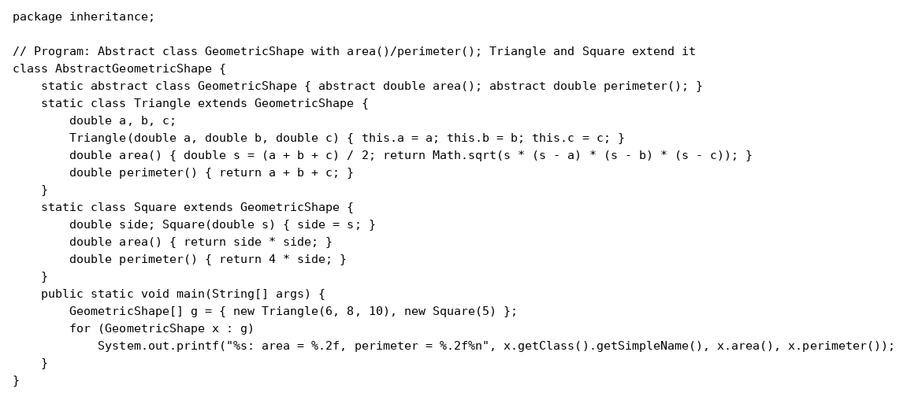
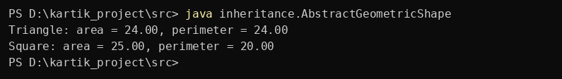

Question 26
Write a Java program to create an abstract class GeometricShape with abstract methods area() and perimeter(). Create subclasses Triangle and Square that extend the GeometricShape class and implement the respective methods to calculate the area and perimeter of each shape
Program


Program screenshot not found. Keep the program folder next to this website folder.
Output


Output screenshot not found. Keep the output folder next to this website folder.